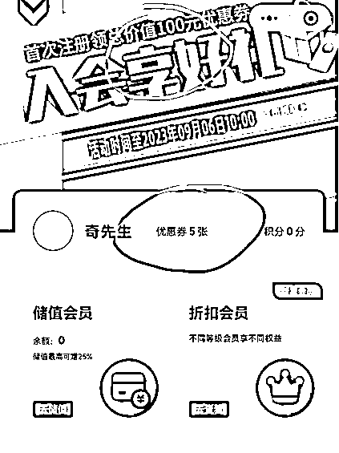

来源：https://dw0m1lhfafv.feishu.cn/docx/Ph6RdE4huoL2dOxB5xyc4ANgnrd
大家好，我是老图，土木行业从业者，一直在研究各种套利路子的体验家。
给大家看下营收情况，2023年7月5日开始咸鱼开店，两天的营收，我之前也没有做过咸鱼店，首次尝试。
和家里哥哥吃饭聚会，听到这个方法，哥哥不会用咸鱼，想的找线下技师帮忙推给客人使用，他再一个客人返几块钱的模式。
（1）因为确实没有体验过金色印象，美团搜索了下，这个店在重庆就有40家连锁店，在重庆、成都、长沙、西安都有连锁店，充值赠送全国所有店通用，有套利机会
（2）咸鱼上也找了下，不少卖家，很多卖的的数量也很可观
（3）自己找了个感觉还不错的咸鱼卖家，从咸鱼下单感受了下咸鱼下单到付款全流程。
（4）和技师聊天，再次确认下项目真实性和套利空间，并且成功和技师形成利益共同体。
（因为她们平时休息自己也会去按，但是公司规定她们不能有充值优惠，所有她们只有找第三方或者家里人，找家里人家里人充值大多数会嫌麻烦）
（5）给技师充值1w，技师拿到返利，因为第二天技师就要休息和朋友去按摩，所以我充值完当天就需要准备好咸鱼相关设置、挂品、以及解决用线上远程支付问题。
（听说以前是叫跑腿送券，所以由此可知这个项目以前到现在应该一直存在，店家老板也知道，如同生财礼品券套利）
（6）下楼的时候发现很多领着行李箱的人去，估计是打算在这按摩住宿，其实看了下价格比直接去酒店便宜，你想啊100多就可以自助餐+泡脚+按摩+电影+留宿睡觉，不比住宾馆好吗？
所以更加看好这个市场，住宿房间节假日涨价但是金色印象不会涨价。
（7）咸鱼上既然有这么多家，证明肯定有利可图，加上查了生财里没有相关帖子觉得应该可以做，天眼查看了下金色印象这家公司情况，做了个尽职调查，以及看了下咸鱼开始出现这个的时间，想了下是否还有套利空间。
（1）至少你得有 1w，后期店跑起来其实就是打资金了 。
（2）会操作进行咸鱼优化、加强曝光，这点一方面可以看别的售卖方怎么做的，另一方面生财搜索咸鱼相关，查看如何更好运营咸鱼店，此处感谢生财攀哥，给与的咸鱼相关资料学习
（3）技师。初步计划前期为了做好咸鱼店，每个不同的金色印象分店放一个自己的技师，帮忙推广，推广的好的下次在她的名下充值，一个店也就100-220的成本一次，后面实操发现技师只能带动技师消费群体。
对于项目开始初期这么做会加大成本，不建议这么做，如果已经有了几千利润垫后，可以这个方式拉技师增量。
（4）非常关键的两个点，一是线上如何远程支付，而是工作狗如何线上及时回应买家：我的一个方案是刚好那段时间不是很忙，反正也就1w，先试试，和技师留了微信。
这样我的第一单让技师跑下感受下，看是否还能优化，还有哪些不足，后面如果确实盈利不错，时间付出比划算。
懂技术的盆友也可以试试能否找专人同步代运营好几个咸鱼店或者付费看下能否开发相关程序、机器人自动回复，达到无人化。
（5）后面咸鱼挂品以后，就是优化曝光，切记不要用WiFi弄咸鱼，要用自己流量，不然真会被限流！
（6）设置好咸鱼的相关提醒这样哪怕你在上班，有客户找到你能第一时间回应，能加大店的权重。
（7）通过话术等，让客户先下单，下单以后，再通过账单扫码付款方式，远程帮客户付。
（8）客户收货，留钩子引流到自己私域微信，引导好评。
（9）闭环，前期才做可以再测算下自己的成本利润，进行优化，类似这样：
（10）搞清楚金色印象的各个产品卖价和产品情况，我一开始因为这个有踩坑，比如做项目是时尚区还是CEO区，CEO区每个项目多20元，有的买家不是故意想占便宜而是他们也不清楚这里面的区别
（1）充值1w送了2500（以前3000），优惠较大，只要咸鱼买的比美团便宜，有一定空间，只是现在咸鱼基本卖家都有个价格小区间。
（2）店里技师不允许充值优惠，技师到店身份证会出来，所以技师也有购买需求，关键是及时性回复问题。技师被知道推销咸鱼，要被开除;
(3）费用组合获利，除了像双人和单人项目基本咸鱼上都比较透明外，加上其他项目比如留宿、或者3人项目，就会有利润空间;
这个就考验你如何定价，因为价格高了不行，低了利润低，但是这块提供了不少利润，懒点的客人一般问了一家和美团比较，比美团便宜就行，你就是挣他这个懒惰的钱；
遇到较真点的客人，真问了好几个咸鱼卖家的话，就随缘了，因为真的流量其实每天都有的 ;
(4）你评价了还会返30的券，这个券是做价值较高的归真使用，这个也能成为你后面的利润;
(5）一个手机号&微信号&咸鱼号跑通套利后，可以再去办理新的手机号，养个半个月，新手机号搭配新的微信号、咸鱼号、支付宝号，可以再开一个咸鱼店.
因为亲自测试了下，新的手机号能一开始就被送100的新人通用券，这都是你的利润，办理个移动最低套餐8元保号的手机套餐降低成本，搭配个月流量包基本够，因为不能用手机连接wifi登咸鱼会影响曝光.

(6）咸鱼上比美团卖的便宜，让用户有利益驱动愿意买，另外有的用户养成了咸鱼购买习惯懒得到处比较，给了套利空间。
(7）主要就是做店，引流，分利。只要金色印象一天不倒，我就跟着喝汤。XYK付款，还是用银行的钱，还能有积分。
生意的本质就是价值的流动，我花钱购买我觉得目前低估的东西或者我觉得能挣钱的东西，金色印象的充值卡是，外汇也是，再卖给需要的人，这里面涉及了宣传、引流、获客、推广、运营等各个版块。
有点小钱（2w内闲钱），又想挣钱，轻资产运营，平时有时间的，最好在金色印象开店的几个城市的。
（1）开个咸鱼店，进行优化（生财有很多相关文档）。
主要几个点就是咸鱼的个人相关信息填好填全、芝麻信用认证、发布产品的配图（最好自己拍或者可以从小红书找）、发布地点挑选如重庆解放碑、长沙五一广场等热门地区流量更大；
还可以不停的适当降价加大曝光和浏览量；同时要注意用一个明显一点的咸鱼名字，昵称一个月只能改一次一定注意
（2) 到店和技师聊，开发眼（自己可以推），充值1w，加上送的2500，余额12500，和技师留下微信（不想线下去的我也有专门的眼，大家共享。
（3）线上进行引流、曝光（小红书、知乎、抖音）；线下以利相诱，把咸鱼号做起来。
（4）线上对顾客发过来的码进行扫码支付，注册好金色印象小程序，直接微信扫码即可。
（5）支付完毕买家离店后，也要记得提醒收货，好聊的买家甚至可以提醒帮忙给个好评，因为他收货了你的资金基本当天能到账，对资金的利用会更好；
他一直不收货就要等10天挤压资金；提醒收货最好发文字，不要用提醒收货按钮
（6）咸鱼回复咨询的客人话术：
【交易流程】
1.把人数项目以及所在门店告诉我；
2.拍下链接我改价格你再付款；
3.进房间技师上钟后让前台把账单给你，拍下账单上的二维码给我，我这边代付；也可以消费完毕后到前台打出线上付款账单把二维码拍给我
（1）多店发展技师眼，推广，留微信（后面发现这个方法行不通，因为技师普遍素质不是很高，不大会用咸鱼，要么就只要和她们进行微信转账）
（2）信用卡搭配使用，信用卡高额消费可以提高额度且有很多积分，积分换钱或者历程1w估计也有200左右，降低成本 ；
（3）给留宿的提前说，哪怕中途让付也没事，可以离开的时候再付，除非不留宿，白天晚点付没关系。
（4）充值冲到技师头上（技师有业绩），让技师帮忙推销，推成一单给5块钱分成，推销得多的技师下次继续在她头上充值，把技师变成你的合伙人和利益共同体（用一个比较好搜的咸鱼ID名字，便于技师告知客人时客人搜索）。
（5）抖音、小红书、知乎自己写软文，探店体验，留咸鱼号，直接和金色印象强相关，只做金色印象
（6）市场变化快，不定期学习下其他店的评价，还有准备的套餐等等，收集优化。
（7）有公司的可以考虑提前注册个公司订阅号，便于承接流量，就叫优惠达人等，承接流量，搜一搜微信相关。
（8）大量铺店（咸鱼店3个），多铺点，防止有个店被封 ；
（9）学习咸鱼店的运营，开始铺，反正开咸鱼又不要钱。
（10）个人兼职运营的时候，可以和技师沟通早点提醒购买的人，可以提前叫服务员，把单子早点打了拍照发给咸鱼购买，咸鱼早点付了就不用一直惦记着拍照付款。
（11）拍二维码提醒消费者要注意拍好些，二维码拍清晰些便于识别。
（12）找亲朋好友刷单，把量提升，权重提升，再看找刷单的量。注意亲密度开通了的不能付，这是个bug，会识别去同一个人。下单也要注意，先关注，多聊会再下单，避免系统判定风险。注意不要写同一个地址，尽量写其他。固定的话术，可以想好，特别涉及一些风险。
（13）为了加速步入谈正事的效率，防止技师觉得我们是钓鱼执法，可以拉个行李箱或者加点其他配置，让自己看起来不像店里的高级领导来钓鱼执法的。
（14）找技师作眼，尽量找看起来比较会沟通，通过聊天判断有一定沟通能力，在店时间最好2年以上（因为后面她和她的闺蜜也会找你咸鱼消费），有一定挣钱欲望的，100多的技师比较多，尽量按这个段位的她们的群体更多，技师多点。
（15）注意保护技师：
1.不要在其他店说技师微信之类，她们可能互相举报啥的 ；
2.和技师搞好关系，她们休息也会去按，我们给她们充值他们能有1w150样子的收入，她们给我们咸鱼用了给个好评啥的，帮忙做店。
（16）跑通以后，如果自己有IP和流量，这个项目还能挣钱，可以做成自己付费文章和付费训练营培训 ；
（17）学习好产品相关知识，便于给客户解答：比如留宿是晚上24.00后开始，一般22：00左右去排队差不多，排队的时候就可以点东西吃哦 ；
（18）可以采用知道房间号和店铺位置后，尝试打电话报电话号码和密码支付，或许比扫码高效，因为扫码有的结束前不一定会给菜单或者拍的码不清晰；
（19）对待留宿的客户，可以第二天早上再帮客户买单，一般客户也会同意，极个别会晚上2-3点按完才走的，小单不接爱惜身体不值得，大单可以考虑。
（20）有的去的比较早的客户也可以通过确认门店和房间后，直接打电话再确认项目后线上买单，就不用等服务员送账单；
（21）发展线下技师，技师可以带人一起消费倒是真的，她们自己也有放松需求，这也是一个消费人群，只是可能她们只会等到咸鱼买单自动结账，不会主动点收货，用不来，可以转化到微信上方便她们操作，也可以多潜在客户。
（22）给买家的评论库（愿意帮忙好评的买家可以直接粘贴复制，利他思维），如：
（23）同时可以把顾客留存到私域微信和微信群，说可以加这个微信，到时候一方面便于提前预订，另一方面，微信群里每个月15日，会抽一个人免单运营长期留存。
但是注意咸鱼上要用“危”“WEI”等字眼代替，免得被判引流扣分降权重
（24）我因为自己有公众号两个，可以把金色印象用作自己互联网IP和多咸鱼店流量沉淀的一个福利赠送，最大化利用价值，比如建立一个“优惠达人”公众号，在自己的禁言福利群，可以来个开店冷启动人头，引流到金色印象群，小号朋友圈和公众号也可以发，引流到群建设氛围，平时禁言，下单可以群里提前预订。
境外黑名单可以发，然后土木公众号主还有自媒体联盟，也可以联合起来，前期加速启动和转化。全部为了给优惠达人的公众号做前期引流。这个是如果后期做大多强的升级想法，时间精力有限情况下不建议。
（25）消费完收货完毕，大的消费，可以发个小红包谢谢惠顾，并且说明，后期也会不定期返小红包，点击关注收藏等，留存客源，研究下哪些东西会加大咸鱼权重，又方便客人做，就要求，同时发红包，准备话术。
（26）小红书知乎抖音知乎等，旅行、省钱等相关话题回答，金色印象吃住省钱又舒服，增加体验感，放自己咸鱼最后。
（27）大家也可以把这个思路运用到华住会、IHG帮订房、机票代订等业务，同理的。
（1)做的大了夸张的金色印象维权，金色印象店已经知道闲鱼上已经有人在这样售卖，后期他们可以调整政策或者不能会员为他人付款的调整，但是如果这个咸鱼售卖对它损害不大还能给他打开品牌，有没有可能也会睁一只眼，闭一只眼。
（2）金色印象万一哪天自己充值的只能自己花费充值多了就麻烦了 。
（3）咸鱼店的运营，如何保证一直有人及时回复，特别下单完买单要及时的问题，不然很尴尬。
（4）咸鱼怎么设置消息提醒，及时回复，有了利润需要专人线上的时候，可以加专人。
（5）还有个风险点就是咸鱼平台的审核机制安全问题，后面会不会更改或者提高交易手续费。
（6）咸鱼平台，后面如果判定这个为违规的风险，就没有销售渠道，需要新开辟，所以需要私域沉淀。
（1)不管在咸鱼上卖无货源也好还是这种充值卡也罢，都要了解清楚产品，我一开始亏了好几单就是没有搞清时尚区、行政区、CEO等的区别就开始做，导致好几单原本应该盈利变成了亏损，拉低了利润率。
（2）一定要及时注意市场行情变化，一开始龙手双人259还能挣钱，后面就要倒亏1块。
（3）线下想用技师的方案行不通，一是技师素质确实有待提高不会用咸鱼，二是每个店去放一个技师体验成本会增加。
（4）留宿的地方，CEO+50；行政70，时尚区+30好几个没有算自己成本情况，照搬其他咸鱼商家套路（他们可能是之前冲1w送3000的成本更低）没有搞清楚产品就开始卖，亏损不少。
（5)一开始做的时候，给买家付款没有提醒拍二维码，拍个账单发过来就不管了，后面做了操作优化，买家一拍单就发给买家，便于操作。
（6）忽略了我们要付出比他们给我们钱更多的成本的bug，以为只要卖出不管价格多低都行，结果有的单利润搞得有点低甚至小亏，好处是留到客户，做成了交易量。
（7）线上扫码顾客的账单二维码，直接微信扫。3分钟内有效（已经实践确认），这样的情况让按铃叫重新拿账单过来就好。
（8）有的拍照过来的二维码，扫不出，需要自己在美化一下图片，把图片调清晰便于扫码。
（9）每个店探店插眼方法不科学，还是得自己线上运营，这样成本更低，线上咸鱼优化运营。
（10）对于砍价，一开始因为思路的错误，光急着想着卖完，忽略了有的价卖出去自己亏的，关键有的价格没有必要自己主动就去报低，因为很多时候买家也是不知道我们低和高的，至少像留宿这些他是只会比较最后账单上的钱是不是比他付给我们的钱更便宜。
（11）过夜是12点以后，才能过夜。所以很多是10点去等着取票。
（12）让客户先拍下不付款，我自己去改价；而不是编辑重新改变价格，再发。
（13）付款前看下菜单，留宿行政和升级区是完全不一样的价格，不看清容易亏损。
（14)有的行政区（如长沙天心阁）有最低消费299元，留宿拼两人更好。
（15）小单几百块无所谓，大单超过利润垫就要注意，可能别人（防止做好了同行捣乱）花了不给说收到货。
最后，谢谢各位看到这里，这个挣不了啥大钱，因为不算是最开始风口期，但是能挣一些小钱，特别是学生党和宝妈群体，风险很低，值得一试。
很多时候，其实我们并不一定是要挣多少钱，而是享受的是挣钱的过程，是在风险中判断机会最后正确并且盈利的过程。
钱是最不值钱的，人才和资源才是。
我是老图，也许是土木行业里野路子最多的人，唯金钱与爱不可负的土木工程人，一直在套利的人生体验家，如果你喜欢我的文章，欢迎点赞，交个朋友。